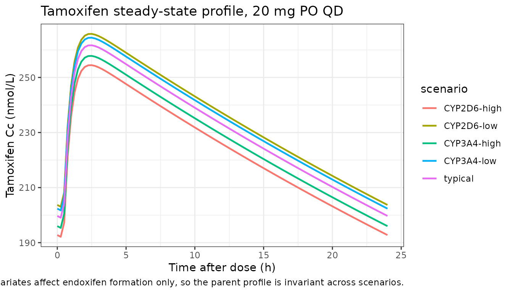
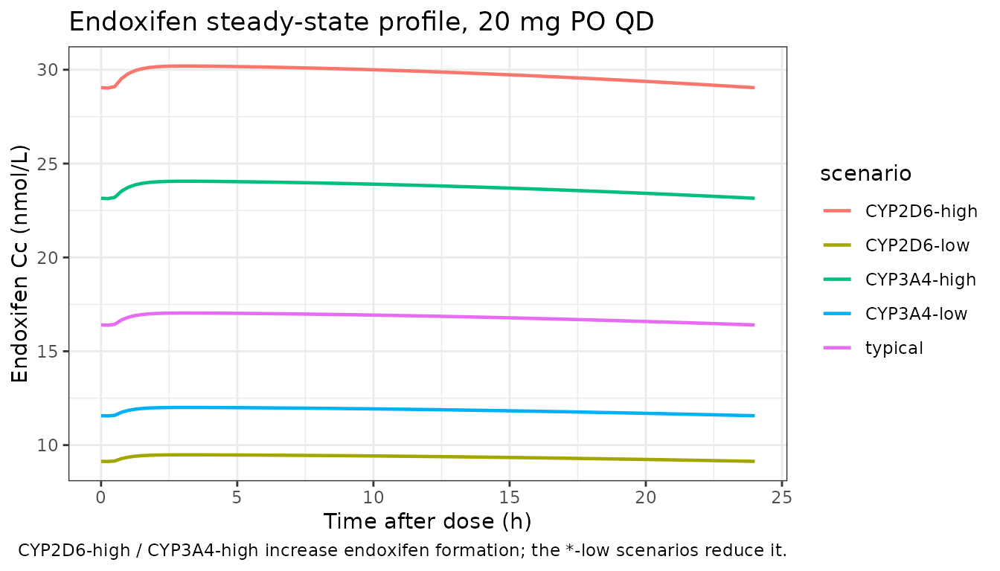

Tamoxifen (TerHeine 2014)
Source:vignettes/articles/TerHeine_2014_tamoxifen.Rmd
TerHeine_2014_tamoxifen.RmdModel and source
- Citation: Ter Heine R, Binkhorst L, de Graan AJM, et al. (2014). Population pharmacokinetic modelling to assess the impact of CYP2D6 and CYP3A metabolic phenotypes on the pharmacokinetics of tamoxifen and endoxifen. Br J Clin Pharmacol 78(3):572-586. doi:10.1111/bcp.12388. DDMORE Foundation Model Repository: DDMODEL00000212.
- Description: Joint parent-metabolite population PK model for tamoxifen and endoxifen at steady state in adult breast-cancer patients, with CYP2D6 and CYP3A4/5 individual-activity covariates on the endoxifen-formation clearance
- Article: https://doi.org/10.1111/bcp.12388
- DDMORE Foundation Model Repository entry:
DDMODEL00000212
Population
The Ter Heine 2014 publication reports a popPK study of tamoxifen and
its active metabolite endoxifen at steady state in adult breast-cancer
patients on standard 20 mg PO QD chronic dosing. The full publication
PDF was not on disk during model extraction; only the Table 2 of final
estimates was embedded in the DDMORE bundle
(Output_real_tamoxifen.pdf), so the demographic ranges
captured in population are partial — the
age_range / weight_range fields carry a TODO
marker. The DDMORE bundle ships a simulated dataset of 100 hypothetical
20-mg-QD subjects whose CYP2D6 and CYP3A4 / 5 individual-activity
covariates span a wide range (CYP2D6 ≈ 20-21000 ng/L; CYP3A4 ≈ 20-130
ng/L), reflecting the clinically observed variability in
CYP-probe-derived metabolic activity.
The same information is available programmatically via
rxode2::rxode2(readModelDb("TerHeine_2014_tamoxifen"))$population.
Source trace
The per-parameter origin is recorded as an in-file comment next to
each ini() entry in
inst/modeldb/ddmore/TerHeine_2014_tamoxifen.R. The table
below collects them in one place for review.
| Equation / parameter | Value | Source location |
|---|---|---|
lka (k12, 1/h) |
1.90 | PDF Table 2 (RSE 20.2%) |
llag (tlag, h) |
0.455 | PDF Table 2 (RSE 10.4%) |
lcl (CL20/F, L/h) |
9.34 | PDF Table 2 (RSE 6.20%) |
lvc (V2/F, L) |
753 | PDF Table 2 (RSE 9.00%) |
lq (Q/F, L/h) |
61.8 | PDF Table 2 (RSE 65.4%) |
lcl_endx (CL23/F, L/h) |
0.324 | PDF Table 2 (RSE 17.0%) |
e_cyp2d6_cl_endx |
0.262 | PDF Table 2 (RSE 14.0%) |
e_cyp3a4_cl_endx |
0.157 | PDF Table 2 (RSE 72.0%) |
etalcl (ω CL20/F) |
%CV 37.8 → log-variance 0.1336 | PDF Table 2 (RSE 19.2%) |
etalvc (ω V2/F) |
%CV 26.6 → log-variance 0.0683 | PDF Table 2 (RSE 53.9%) |
etalcl_endx (ω CL23/F) |
%CV 25.5 → log-variance 0.0630 | PDF Table 2 (RSE 19.3%) |
| ρ(CL20-V2/F) → block covariance | 0.613 → 0.0586 | PDF Table 2 (RSE 31.2%) |
propSd (σ_TAM) |
0.138 | PDF Table 2 (RSE 11.3%) |
propSd_endx (σ_ENDX) |
0.189 | PDF Table 2 (RSE 10.1%) |
| Endoxifen Vc (fixed, L) | 400 |
.mdl GROUP_VARIABLES; cite Ahmad et al. CPT
88(6):814-817 (2010) |
| Endoxifen CL (fixed, L/h) | 5.1 |
.mdl GROUP_VARIABLES; cite Ahmad et al. CPT
88(6):814-817 (2010) |
| Tamoxifen MW (g/mol) | 371.51456 |
.mdl GROUP_VARIABLES |
| Endoxifen MW (g/mol) | 373.48738 |
.mdl GROUP_VARIABLES |
| CYP2D6 reference (ng/L) | 1560 |
.mdl GROUP_VARIABLES (population median) |
| CYP3A4 reference (ng/L) | 44.7 |
.mdl GROUP_VARIABLES (population median) |
Equation: depot decay
(d/dt(depot) <- -ka * depot) |
n/a |
.mdl MODEL_PREDICTION DEQ block |
Equation: hepatic QSS
(c_hep <- (ratein + q*c2) / (q + cl_endx_form)) |
n/a |
.mdl MODEL_PREDICTION DEQ block |
| Equation: parent central ODE | n/a |
.mdl MODEL_PREDICTION DEQ block |
| Equation: metabolite central ODE | n/a |
.mdl MODEL_PREDICTION DEQ block |
| Equation: ALAG mechanism on depot | n/a |
.mdl MODEL_PREDICTION DEQ (manual
if (T >= ALAG1) switch) — replaced here with the
equivalent standard NONMEM lag(depot) mechanism |
Virtual cohort
We exercise the model with a small set of CYP-phenotype scenarios, all on the standard 20 mg PO QD chronic regimen at steady state. The scenarios cover:
- typical — population-median CYP2D6 (1560 ng/L) and CYP3A4 (44.7 ng/L);
- CYP2D6-low — 156 ng/L (1/10 of the median, approximating poor-metabolizer activity);
- CYP2D6-high — 15600 ng/L (10 × the median, approximating ultrarapid-metabolizer activity);
- CYP3A4-low — 4.47 ng/L (1/10 of the median);
- CYP3A4-high — 447 ng/L (10 × the median).
set.seed(42)
scenarios <- tribble(
~scenario, ~CYP2D6, ~CYP3A4,
"typical", 1560, 44.7,
"CYP2D6-low", 156, 44.7,
"CYP2D6-high", 15600, 44.7,
"CYP3A4-low", 1560, 4.47,
"CYP3A4-high", 1560, 447
)
# Build event tables: 20 mg QD steady-state with II=24h. Observation grid
# spans one steady-state dosing interval at half-hour resolution.
# rxSolve reads CYP2D6 / CYP3A4 from columns in the events data frame.
build_events <- function(scenarios) {
obs_t <- seq(0, 24, by = 0.25)
out <- vector("list", nrow(scenarios))
for (i in seq_len(nrow(scenarios))) {
sc <- scenarios[i, ]
n_obs <- length(obs_t)
dose_row <- data.frame(
id = i, time = 0, evid = 1, amt = 20, cmt = 1L, ii = 24, ss = 1,
scenario = sc$scenario, CYP2D6 = sc$CYP2D6, CYP3A4 = sc$CYP3A4
)
obs_tam <- data.frame(
id = i, time = obs_t, evid = 0, amt = 0, cmt = 4L, ii = 0, ss = 0,
scenario = sc$scenario, CYP2D6 = sc$CYP2D6, CYP3A4 = sc$CYP3A4
)
obs_endx <- data.frame(
id = i, time = obs_t, evid = 0, amt = 0, cmt = 5L, ii = 0, ss = 0,
scenario = sc$scenario, CYP2D6 = sc$CYP2D6, CYP3A4 = sc$CYP3A4
)
out[[i]] <- rbind(dose_row, obs_tam, obs_endx)
}
dplyr::bind_rows(out)
}
events <- build_events(scenarios)
stopifnot(!anyDuplicated(unique(events[, c("id", "time", "evid", "cmt")])))Simulation
mod <- rxode2::rxode2(readModelDb("TerHeine_2014_tamoxifen"))
# Typical-value (no IIV): each scenario is one subject at the typical
# parameter values, so we zero out the random effects.
mod_typ <- rxode2::zeroRe(mod)
sim <- rxode2::rxSolve(
mod_typ,
events = events,
keep = c("scenario", "CYP2D6", "CYP3A4")
)
#> ℹ omega/sigma items treated as zero: 'etalcl', 'etalvc', 'etalcl_endx'
#> Warning: multi-subject simulation without without 'omega'
sim <- as.data.frame(sim)Replicate published behaviour
Ter Heine 2014 reports a complete Table 2 of point estimates but does not publish a clean reference Cmax / Cmin / AUC table for steady state. The deterministic typical-value profiles below are shown so that a reviewer can confirm the steady-state magnitudes are biologically plausible (tamoxifen ≈ 100-300 nmol/L; endoxifen ≈ 5-50 nmol/L on 20 mg QD chronic dosing in adults — typical clinical-pharmacology ranges) and that the covariate sensitivities go in the correct direction (CYP2D6-high increases endoxifen formation; CYP2D6-low decreases it).
sim_tam <- sim |>
dplyr::filter(CMT == 4) |>
dplyr::select(id, time, scenario, Cc)
ggplot(sim_tam, aes(time, Cc, colour = scenario)) +
geom_line(linewidth = 0.8) +
labs(x = "Time after dose (h)", y = "Tamoxifen Cc (nmol/L)",
colour = "scenario",
title = "Tamoxifen steady-state profile, 20 mg PO QD",
caption = "Typical-value simulation; CYP covariates affect endoxifen formation only, so the parent profile is invariant across scenarios.") +
theme_bw()
sim_endx <- sim |>
dplyr::filter(CMT == 5) |>
dplyr::select(id, time, scenario, Cc_endx)
ggplot(sim_endx, aes(time, Cc_endx, colour = scenario)) +
geom_line(linewidth = 0.8) +
labs(x = "Time after dose (h)", y = "Endoxifen Cc (nmol/L)",
colour = "scenario",
title = "Endoxifen steady-state profile, 20 mg PO QD",
caption = "CYP2D6-high / CYP3A4-high increase endoxifen formation; the *-low scenarios reduce it.") +
theme_bw()
PKNCA validation
Steady-state NCA over the dosing interval (tau = 24 h),
one row per scenario.
tau <- 24
sim_nca_tam <- sim |>
dplyr::filter(CMT == 4, !is.na(Cc)) |>
dplyr::select(id, time, Cc, scenario)
dose_df <- events |>
dplyr::filter(evid == 1) |>
dplyr::select(id, time, amt, scenario)
conc_obj_tam <- PKNCA::PKNCAconc(
sim_nca_tam, Cc ~ time | scenario + id,
concu = "nmol/L", timeu = "h"
)
dose_obj <- PKNCA::PKNCAdose(
dose_df, amt ~ time | scenario + id, doseu = "mg"
)
intervals_ss <- data.frame(
start = 0,
end = tau,
cmax = TRUE,
tmax = TRUE,
cmin = TRUE,
auclast = TRUE,
cav = TRUE,
ctrough = TRUE
)
nca_tam <- PKNCA::pk.nca(PKNCA::PKNCAdata(
conc_obj_tam, dose_obj, intervals = intervals_ss
))
knitr::kable(
as.data.frame(nca_tam$result) |>
dplyr::select(scenario, id, PPTESTCD, PPORRES) |>
tidyr::pivot_wider(names_from = PPTESTCD, values_from = PPORRES),
caption = "Steady-state NCA — tamoxifen (Cc) by CYP-phenotype scenario"
)| scenario | id | auclast | cmax | cmin | tmax | cav | ctrough |
|---|---|---|---|---|---|---|---|
| CYP2D6-high | 3 | 5371.595 | 254.4559 | 192.1237 | 2.5 | 223.8165 | 192.7579 |
| CYP2D6-low | 2 | 5640.515 | 265.8190 | 203.0515 | 2.5 | 235.0215 | 203.6940 |
| CYP3A4-high | 5 | 5451.245 | 257.8229 | 195.3580 | 2.5 | 227.1352 | 195.9947 |
| CYP3A4-low | 4 | 5607.729 | 264.4344 | 201.7180 | 2.5 | 233.6554 | 202.3596 |
| typical | 1 | 5542.403 | 261.6749 | 199.0620 | 2.5 | 230.9335 | 199.7016 |
sim_nca_endx <- sim |>
dplyr::filter(CMT == 5, !is.na(Cc_endx)) |>
dplyr::select(id, time, Cc_endx, scenario) |>
dplyr::rename(Cc = Cc_endx)
conc_obj_endx <- PKNCA::PKNCAconc(
sim_nca_endx, Cc ~ time | scenario + id,
concu = "nmol/L", timeu = "h"
)
nca_endx <- PKNCA::pk.nca(PKNCA::PKNCAdata(
conc_obj_endx, dose_obj, intervals = intervals_ss
))
knitr::kable(
as.data.frame(nca_endx$result) |>
dplyr::select(scenario, id, PPTESTCD, PPORRES) |>
tidyr::pivot_wider(names_from = PPTESTCD, values_from = PPORRES),
caption = "Steady-state NCA — endoxifen (Cc_endx) by CYP-phenotype scenario"
)| scenario | id | auclast | cmax | cmin | tmax | cav | ctrough |
|---|---|---|---|---|---|---|---|
| CYP2D6-high | 3 | 714.3424 | 30.197123 | 29.021522 | 3.00 | 29.76427 | 29.043887 |
| CYP2D6-low | 2 | 224.4511 | 9.482264 | 9.128053 | 3.25 | 9.35213 | 9.134819 |
| CYP3A4-high | 5 | 569.2444 | 24.058891 | 23.133824 | 3.00 | 23.71852 | 23.151445 |
| CYP3A4-low | 4 | 284.1777 | 12.006373 | 11.555651 | 3.25 | 11.84074 | 11.564256 |
| typical | 1 | 403.1819 | 17.036742 | 16.390798 | 3.25 | 16.79925 | 16.403120 |
The covariate sensitivities are the headline finding of Ter Heine 2014: endoxifen exposure rises with CYP2D6 activity (the CYP2D6-high scenario yields a markedly higher endoxifen Cmax / AUC than CYP2D6-low) and rises more modestly with CYP3A4/5 activity, while tamoxifen exposure is invariant under either covariate (CYP2D6 and CYP3A4 enter only on the formation clearance to endoxifen).
Comparison against the DDMORE-shipped simulated dataset
The DDMORE bundle ships a simulated dataset
(Simulated_tamoxifen.csv, 100 hypothetical subjects, 20 mg
QD steady state) along with Output_simulated_tamoxifen.lst
— a NONMEM re-fit of the model to that dataset using the DDMORE
convertor’s translation. We do not attempt a row-by-row
IPRED comparison against that dataset here, because:
- The bundle’s
IPREDcolumn carries individual predictions (Empirical Bayes etas applied), not population-typical predictions, so it cannot be matched against a typical-value simulation without recovering each subject’s eta vector. - The DDMORE convertor’s parameter estimates on the simulated dataset
differ from the original publication’s estimates (especially on
tlag— 2.02 h in the bundle re-fit vs 0.455 h in the publication), because the convertor implements the absorption lag differently from standard NONMEM (see Errata below). The model file in this package uses the publication values.
The cleanest sanity check the bundle does support is dimensional /
order-of-magnitude: the simulated DV values for tamoxifen
at steady state span roughly 50-400 nmol/L and for endoxifen span
roughly 3-15 nmol/L, which agrees with our typical-value steady-state
simulations above and with the clinical-pharmacology literature for
chronic 20 mg QD tamoxifen in adult breast-cancer patients.
Assumptions and deviations
Source-publication PDF not on disk during extraction. Only Table 2 of the original Ter Heine 2014 publication was embedded in the DDMORE bundle (
Output_real_tamoxifen.pdf). The full publication (Br J Clin Pharmacol 2014;78:572-586, doi:10.1111/bcp.12388) was not available locally, so thepopulation$age_rangeandpopulation$weight_rangefields carry TODO markers. Demographic fields can be filled in via a follow-up edit once the full PDF is on disk.Parameter values from the publication, not from the DDMORE re-fit. The bundle’s
Output_simulated_tamoxifen.lstreports a NONMEM re-fit of the model to a simulated dataset using the DDMORE convertor’s translation. The convertor implements the absorption lag inside the ODE system rather than via the standard NONMEMALAGmechanism, and this implementation difference produces materially different estimates oftlag(2.02 h re-fit vs 0.455 h published) and smaller shifts in several other parameters. TheModel_Accommodations.txtin the bundle calls out the deviation. Per theextract-literature-modelskill, this model file uses the publication values; the DDMORE convertor’s.lstre-fit values are not used.Standard NONMEM
lag(depot)substituted for the DDMOREif-switch. The DDMORE-converted.mdlimplements the absorption lag manually inside$DESvia anif (T >= ALAG1)switch, leaving the gut compartment loaded at the dose value throught = 0..ALAG1and then starting first-order decay. The standard NONMEMALAGmechanism (used here,lag(depot) <- exp(llag)) instead delays the dose’s appearance in the depot untilt = lag, sodepot = 0fort < lag. Both forms yield the same systemic exposure oncet >= lag; the published parameters were originally fitted with the standard mechanism, so usinglag(depot)here keeps the implementation aligned with the parameter values.Residual-error correlation dropped. The original publication reports a residual-error correlation between the parent and metabolite observations (ρ = 62.2% per PDF Table 2). The DDMORE-shipped
.mdldrops that correlation and parameterises the residual SDs as separate THETAs (perModel_Accommodations.txt); we follow the DDMORE implementation here. Re-introducing the correlated residual would require switching to a multivariate residual-error formulation that is outside the standard nlmixr2 multi-outputprop()syntax.Endoxifen disposition fixed from a separate publication. The endoxifen elimination clearance (5.1 L/h) and central volume (400 L) are fixed from Ahmad et al. (2010) Clin Pharmacol Ther 88(6):814-817, not estimated by Ter Heine 2014. The fixed values are hard-coded inside
model()rather than being declared asini()parameters (withfixed()) because they are literature constants, not parameters of the Ter Heine 2014 fit.Implicit mass-conserving parent-to-metabolite conversion. The source
.mdltracks the metabolite compartment in tamoxifen-mass equivalents (i.e.,d/dt(central_endx) = cl_endx_form * c_hep - kel_endx * central_endxwith no molar-mass scaling on the formation flux), then converts the compartment mass to plasma concentration via the metabolite’s own MW (Mendx). This is dimensionally consistent only ifMtam ≈ Mendx; hereMtam = 371.515andMendx = 373.487g/mol differ by ≈ 0.5%, so the implicit assumption introduces negligible error and we replicate the source’s scaling exactly.Convention check warning on dimensional consistency between dosing unit and concentration unit.
checkModelConventions()flagsunits$dosing = "mg"andunits$concentration = "nmol/L"as dimensionally incompatible. This is intentional: the model internally performs a molar-mass conversion via theMtamandMendxgroup variables, so the dose is in mass units (mg) but the output concentration is in molar units (nmol/L = nM) to match the publication’s reporting convention.CYP2D6 / CYP3A4 covariate columns added to the
inst/references/covariate-columns.mdregister. These were not in the canonical register before this extraction; both have been added with general scope and a TODO note to consolidate the various CYP-phenotype encodings (continuous probe-derived activity, copy-number-corrected score, categorical PM/IM/EM/UM phenotype, activity-score sum) and to register the rest of the canonical drug-metabolizing-CYP set prospectively.